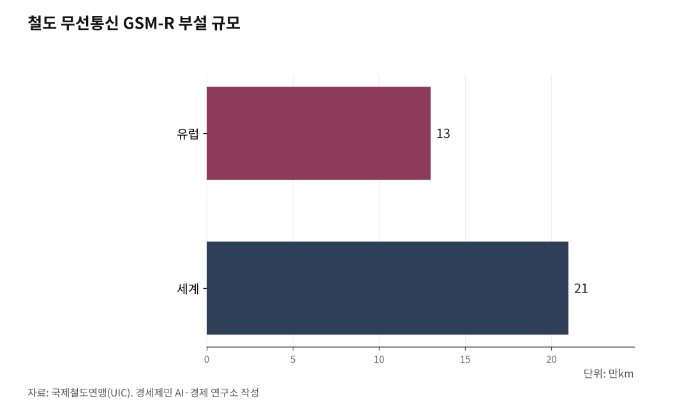

[환황해철도-번외] 유럽은 5G 철도… 한국 국제철도의 두 관문, 조선과 중국
유럽, 2G 기반 GSM-R 접고 5G FRMCS로 전환… 2027년 표준 확정
한국, LTE-R 세계 최초 상용… 5G 국제표준 정합이 과제
대륙 노선은 중국 체계 준용, 운영은 한중합작… 직결운행 전제는 북한
유럽 철도가 30년 가까이 써온 무선통신을 갈아탄다. 독일과 프랑스, 영국이 2세대(2G) 이동통신 기반의 기존 망을 접고 5세대(5G) 기반 차세대 시스템으로 옮겨간다. 이는 장비 교체에 그치지 않고, 국경을 넘는 열차가 어느 표준 위에서 달릴지와 직결된다.

이 변화는 대륙과 끊긴 한국 철도에 물음 두 가지를 남긴다. 표준을 국제 흐름에 맞출 수 있는가, 그리고 끊어진 북녘 철길을 어떻게 할 것인가.
1. 2G가 저문다, 유럽은 FRMCS로
유럽 철도는 1990년대 후반부터 철도용 무선통신 GSM-R을 깔았다. 기관사와 신호원의 안전 통화, 유럽 철도교통관리시스템(ERTMS)의 데이터 전송을 맡아온 핵심망이다.
GSM-R은 2G 기반이다. UIC 자료를 보면 부설 규모는 유럽 약 13만km, 세계 약 21만km에 이른다. 장비는 2030년경 수명이 다하고, UIC는 지원 종료를 2035년경으로 본다.
후속이 차세대 철도 이동통신 시스템(FRMCS, Future Railway Mobile Communication System)이다. 국제철도연맹(UIC)이 설계한 5G 기반 표준으로, 음성 대체를 넘어 신호와 영상, 자동운전까지 아우른다.
에릭슨 자료를 보면 시험은 2026년 시작하고 첫 구현판인 FRMCS V3는 2027년 표준 체계에 들어간다. 독일은 도이체반 시험선에 1900MHz 대역 5G 철도망을 깔았고, 프랑스 SNCF 레조와 영국 네트워크레일도 시범사업과 단계적 전환에 들어갔다.

2. LTE-R 세계 최초 한국, 5G 표준이 과제
한국은 철도 통신을 일찍 디지털로 옮겼다. 2019년 4월 스마트폰 기반 5G를 세계 최초로 상용화했고, 철도 무선통신도 앞서 갔다.
한국은 2G(GSM-R)를 깔지 않았다. 곧장 4세대 기술인 철도통합무선망(LTE-R)으로 갔다. 그 위에 세운 한국형 열차제어시스템(KTCS, Korean Train Control System)은 세계 최초의 LTE-R 기반 실시간 열차제어로, 2018년 개발을 마치고 2022년 전라선에서 상용 운전에 성공했다.
한국철도기술연구원은 세계 최초로 국제표준을 만족하는 LTE-R 국제공인 인증서를 발행했다. 5G 단계도 시작했다. 철도연은 4.7기가헤르츠(GHz) 대역의 이음5G-R을 개발해 시속 350km 이상에서도 데이터 통신이 되게 하고, 오송 철도종합시험선에 시험망을 깐다.
남은 것은 표준 정합이다. 유럽은 UIC가 주도하는 FRMCS, 중국은 자국 5G-R 표준을 따로 만든다.
주파수도 어긋난다. 유럽 FRMCS는 1900~1910MHz대를, 중국 5G-R은 2023년 허가받은 상향 1965~1975MHz와 하향 2155~2165MHz를 쓴다.
3. 중국의 8종8횡과 CTCS
한국이 맞춰야 할 중국부터 본다. 중국은 2016년 중장기 철도망 계획에서 4종4횡을 8종8횡(八纵八横)으로 넓혔다. 종과 횡으로 각각 8개씩, 간선 고속철 16개로 인구 50만 이상 도시의 97%를 잇는 구상이며 골격은 이미 섰다.
연장도 길다. 2016년 계획의 2030년 목표였던 고속철 4만5000km는 2024년 말 4만8000km로 앞당겨 넘어 세계 고속철의 70%를 차지한다. 중국은 2030년 6만km라는 새 목표를 내걸었다.
신호 체계는 CTCS다. 중국은 2002년 ETCS를 참조해 중국형 열차제어시스템(CTCS, Chinese Train Control System)을 만들었다. 고속선에 쓰는 CTCS-3은 무선폐색센터(RBC)와 GSM-R 무선통신, 궤도회로로 300~350km/h 열차를 제어하며 유럽 ETCS 레벨2와 동등하다.
통신에서 중국도 전환점에 있다. CTCS-3은 지금 GSM-R, 곧 유럽이 버리는 그 2G 위에서 돈다. 중국은 2023년 5G-R 시험 주파수를 허가받아 GSM-R에서 5G-R로 갈아타는 중이다.
전기와 궤간은 한국과 통한다. 전철화는 고속철도 세계 표준인 2만5000볼트(25kV) 교류이고, 궤간은 표준궤(1435mm)다. 다만 전력 주파수가 중국 50헤르츠(㎐), 한국 60㎐로 갈려 국경을 넘는 열차는 양쪽을 받는 전장이 필요하다.
4. 국경을 넘는 상호운용성
표준은 국경을 넘는 운행의 조건이다. 통신과 신호가 다르면 열차 한 대가 국경에서 시스템을 갈아타야 한다.
국내만 해도 신호 방식이 여럿 섞여 한 열차가 달리며 시스템이 몇 차례 바뀐다. 이 차이가 국경 밖으로 나가면 국제 문제로 커진다. 유럽이 FRMCS로 표준을 통일하려는 까닭이 여기 있다.
세 체계는 한 뿌리에서 나왔다. 중국 CTCS도 ETCS를 참조해 만들었고, 한국 KTCS도 ETCS 레벨2와 동등하게 설계됐다. 열차제어 논리만 보면 한국과 중국, 유럽은 같은 계통이다.
갈라지는 곳은 통신 계층이다. 한국은 LTE-R에서 5G로, 중국은 GSM-R에서 5G-R로, 유럽은 GSM-R에서 FRMCS로 각자 간다. 통신과 주파수가 어긋나면 한 노선에서 함께 달리지 못한다.
5. 여객도 화물도, 준용과 합작 운영
대륙으로 나가는 한국 국제열차는 중국 체계를 준용할 수밖에 없다. 여객은 중국 고속철도를, 화물은 중국 일반철도를 따라야 한다. 노선의 신호 체계는 그 노선을 운영하는 나라가 정하기 때문이다.
표준궤(1435mm)가 같아 차륜은 중국 레일에 맞지만, 같은 궤간은 굴러갈 조건일 뿐 달릴 조건은 아니다. 한국 열차가 중국 노선에 들어가려면 CTCS를 읽는 신호장비와 중국 통신을 받는 무선장비, 50㎐를 받는 전장을 얹어야 한다.
운영 형태는 한중카페리가 보여준다. 한중 항로의 카페리 선사들은 1990년 양국 정부 합의를 바탕으로 양국 합작법인 형태로 운영해 왔다. 인천~옌타이 노선의 한중훼리는 한국 측과 중국 국영 COSCO 계열사가 함께 참여한다.
대륙 철도도 합작으로 굴러간다. 중국-유럽 화물열차의 통과 구간은 러시아와 벨라루스, 카자흐스탄 국영철도의 합작회사가 운영한다. 운영과 신호, 통관을 한 나라가 단독으로 풀기 어려운 구조다.
6. 직결운행의 절대 전제는 북한
대륙으로 나가는 길 앞에 더 큰 관문이 있다. 북한이다. 육로로 대륙망에 닿는 길은 모두 북한을 지난다.
한반도종단철도(TKR, Trans-Korean Railway)가 중국횡단철도(TCR, Trans-China Railway)나 시베리아횡단철도(TSR, Trans-Siberian Railway)와 레일로 이어지려면 북한 구간 통과가 불가피하다. 북한 협력 없이는 직결운행이 한 발도 나아가지 못한다.
기록이 이를 보여준다. 2007년 12월 문산~봉동 화물열차가 개통됐으나 남북관계가 식자 2008년 12월 멈췄다. 2024년에는 합동참모본부가 동해선·경의선 철도는 2023년 12월부터 차단되고 그해 8월 실질적으로 전체가 끊겼으며, 10월 15일 연결도로 폭파로 육로가 완전히 단절됐다고 밝혔다.
황해를 건너는 열차페리(Train Ferry)는 직결운행이 아니다. 화차를 배에 실어 중국 항만에서 철도망에 올리는 복합운송(sea-rail)이다. 우회로로 물류 편익을 일부 누릴 수는 있어도, 한국 열차가 레일로 대륙을 달리는 국제철도 운행과는 다르다.
7. 전환점에 선 한국 철도
직결운행은 남북관계가 풀려야 가능하다. 그 전까지 남는 것은 표준 정합이다. 마침 중국은 GSM-R에서 5G-R로, 유럽은 GSM-R에서 FRMCS로 옮겨가는 5G 전환점이다.
철도연도 같은 방향을 본다. 철도연은 LTE-R 국제공인 인증을 발판으로 5G의 철도 적용을 위한 국제표준화로 넓히겠다는 계획을 밝혔다. 한국이 KTCS와 이음5G-R을 국제 FRMCS·중국 5G-R과 같은 5G 세대에서 맞물리게 할 수 있을지가 변수다.
대륙은 가까워지는데 한국 철도는 여전히 섬이다. 통신 표준은 지금 전환기에 있고, 북녘 철길은 끊겨 있다. 유럽의 5G 전환이 한국 철도에 남긴 두 물음, 표준과 북한이 여기서 만난다.
※ 이 기사는 AI 프로그램 클로드를 활용해 작성했습니다.
참고문헌
· "FRMCS", 국제철도연맹(UIC), 2025.9., https://uic.org/rail-system/telecoms-signalling/frmcs
· "From GSM-R to FRMCS: shaping rail's 5G future", Ericsson, 2026.5.12., https://www.ericsson.com/en/reports-and-papers/white-papers/integrating-frmcs-with-5g-technology
· "Mainline Railway Modeled with 2100 MHz 5G-R Channel Based on Measured Data of Test Line of Loop Railway", Symmetry(MDPI) 16(4) 431, 2024.4.4., https://www.mdpi.com/2073-8994/16/4/431
· "China to equip high-speed trains with CTCS", International Railway Journal, 2018.9.6., https://www.railjournal.com/signalling/china-to-equip-high-speed-trains-with-ctcs/
· "한국 고속철 최고 시속 305㎞…중국은 '400㎞ 시대' 연다", 머니투데이, 2025.7.20., https://www.mt.co.kr/world/2025/07/20/2025071714185141142
· "25 kV AC railway electrification", Wikipedia, 2026.2.22., https://en.wikipedia.org/wiki/25_kV_AC_railway_electrification
· "국산 열차제어시스템 KTCS, 전국 철도망 구축 넘어 해외진출 전략 모색", 전기신문, 2026.3.4., https://www.electimes.com/news/articleView.html?idxno=365647
· "철도연, LTE-R 철도무선통신 국제공인 인증서 발행", 정보통신신문, 2022.5.3., https://www.koit.co.kr/news/articleView.html?idxno=96570
· "철도연, 철도 디지털 전환을 위한 이음5G-R 연구개발 한창", 한국철도기술연구원, https://www.krri.re.kr/web/contents/krri030202.do?schM=view&id=22454
· "5G (5세대 이동통신)", 대한민국 정책브리핑, 2019., https://www.korea.kr/special/policyCurationView.do?newsId=148863556
· "[속보] 합참 北, 경의선·동해선 남북 연결도로 폭파", 서울신문, 2024.10.15., https://www.seoul.co.kr/news/politics/north/2024/10/15/20241015500068
· "한-중 해상물류의 최전선, 인천과 연태 잇는 한중훼리 '신향설란'호를 타다", 물류신문, 2025.12.10., https://www.klnews.co.kr/news/articleView.html?idxno=319135
· "Eurasian rail freight growth is two years ahead of forecasts", Railway Gazette International, 2021.10.26., https://www.railwaygazette.com/eurasian-rail-freight-growth-is-two-years-ahead-of-forecasts/59611.article
#FRMCS #GSM-R #5G철도 #KTCS #CTCS #5G-R #이음5G-R #국제철도 #한중합작 #한중카페리 #8종8횡 #북한철도